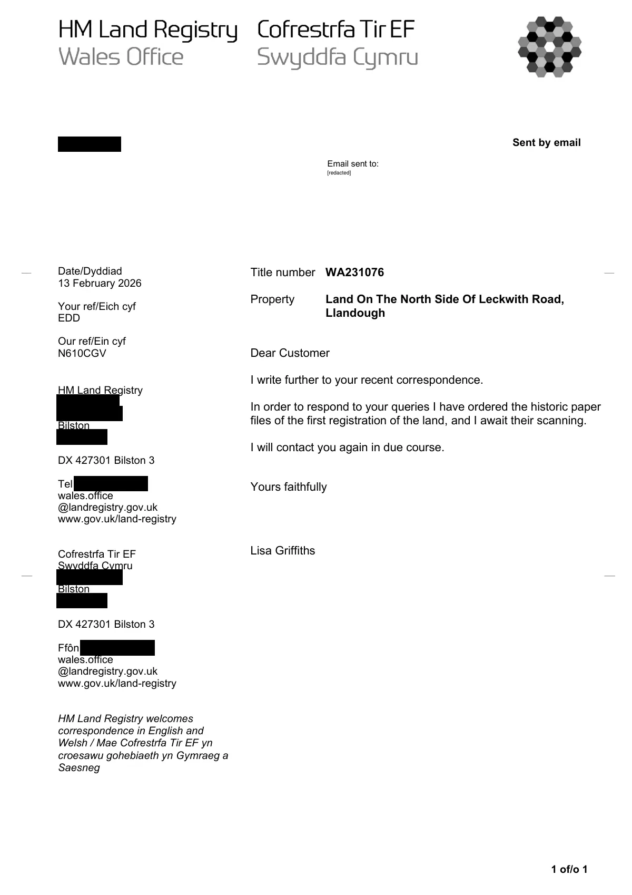

GHF-E106-R91-A1 correspondence (no disclosure)
Holding letter: paper files being retrieved

Transcript
1 of/o 1 Sent by email Date/Dyddiad 13 February 2026 Your ref/Eich cyf EDD Our ref/Ein cyf N610CGV HM Land Registry [address redacted] Bilston [address redacted] DX 427301 Bilston 3 Tel [phone redacted] wales.office @landregistry.gov.uk www.gov.uk/land-registry Cofrestrfa Tir EF Swyddfa Cymru [address redacted] Bilston [address redacted] DX 427301 Bilston 3 Ffôn [phone redacted] wales.office @landregistry.gov.uk www.gov.uk/land-registry HM Land Registry welcomes correspondence in English and Welsh / Mae Cofrestrfa Tir EF yn croesawu gohebiaeth yn Gymraeg a Saesneg Title number WA231076 Property Land On The North Side Of Leckwith Road, Llandough Dear Customer I write further to your recent correspondence. In order to respond to your queries I have ordered the historic paper files of the first registration of the land, and I await their scanning. I will contact you again in due course. Yours faithfully Lisa Griffiths Requester Email sent to: __ __ __ __ [redacted]
Artifact description
An automated notice forwards an attached official PDF letter or requisition without describing its content.
| Catalogue ID | GHF-E106-R91-A1 |
|---|---|
| What it is | PDF document from HM Land Registry. Attached to an email received on 13 February 2026, their reference WA231076/A/216/LG. 1 page. |
| From | HM Land Registry |
| Email received | 13 February 2026 |
| Their reference | WA231076/A/216/LG |
| Pages | 1 |
| File | Correspondence.pdf (184 KB) |
| State | Read |
Our integration
Part of the records enquiry thread with HM Land Registry opened 24 March 2026. The thread's standing classification is “correspondence (no disclosure)”. Statutory time: no statutory deadline.
Concern to test: whether this reply answers the question as asked, or a narrower one. Not checked against the original request wording here.
What cuts against the case: the body disclosed material, which is the opposite of a refusal; what it disclosed is shown here as sent.
Related: GHF-E106-R92-A1 — Letter: registration history of Ty Mawr Farm · The covering email · What They Don’t Say: WTDS-74fd66b3-1 · EV-0351 in the evidence catalogue · Timeline · Disclosure Dartboard